坏了。
牌桌上不止我一个"全知者"。
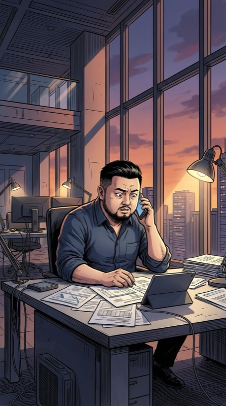
【办公室 · 黄昏 · 特写/仰角】
电话那头律师的声音像一把钝刀，一刀一刀割着我最后的侥幸。
"朱总，对方已经正式递交了收购要约。72小时。"
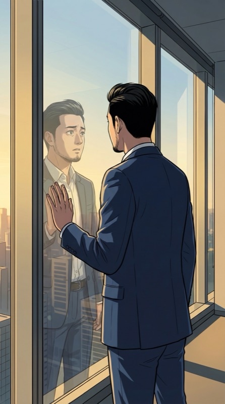
【办公室 · 落地窗前 · 中景/背影】
窗外的城市天际线在暮色里发着橘红色的光，像一场正在燃烧的葬礼。
创业三年。从车库到这间能看见半个城市的办公室，我以为最难的日子已经过去了。
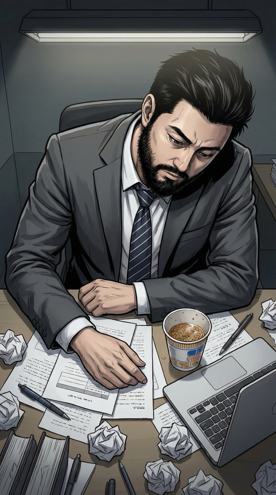
【办公室 · 俯拍/全景】
呵，比被裁员还惨——老板被裁。
我把揉皱的收购要约扔到桌上，旁边的泡面已经坨成了一坨。创业者最后的尊严，大概就是泡面还没来得及吃。
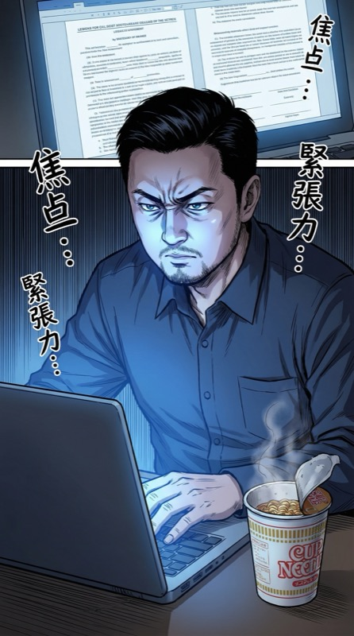
【办公室 · 桌面 · 中景/平视】
屏幕上密密麻麻的法律条款，每一条都在说同一句话——你完了。
不对。我盯着第七条的反稀释条款，直觉告诉我，这份收购方案里藏着他们不想让我看到的东西。
黑客的本能：越是复杂的代码，越可能有后门。
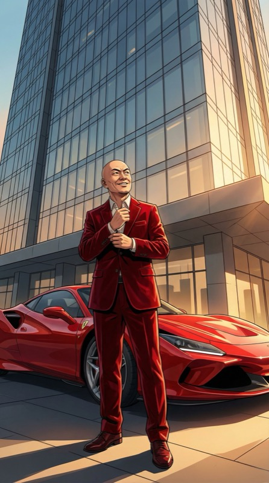
【公司楼下 · 午后 · 全景/仰拍】
红色法拉利停在公司楼下。红色丝绒西装，锃亮的光头——这个组合，全深圳只有一个人。
操。老K。
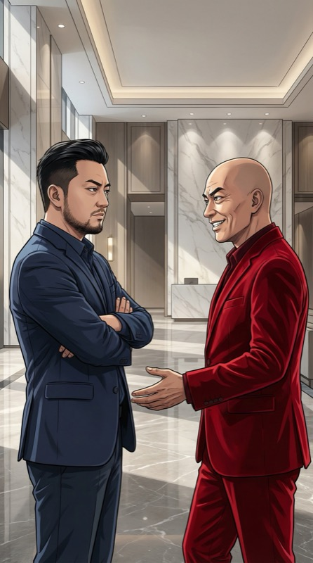
【公司大堂 · 中景/侧面双人】
"小朱！十年没见，你发福了啊！"
我抱着胳膊看着他。十年前在大学机房，这人花了三百块请我帮他修服务器。修完之后他说"回头请你吃饭"。
这顿饭，等了十年。不对，他还欠我八百块。
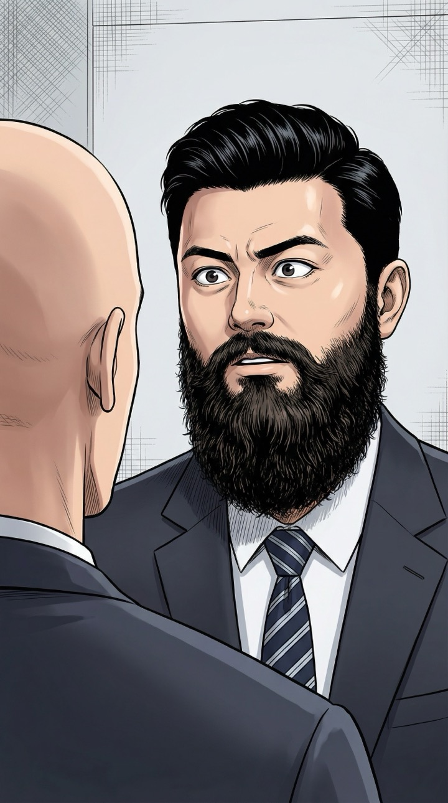
【大堂 · 过肩特写】
"听说你遇到点麻烦？"
他怎么知道的？收购要约今天才送到，消息传得比外卖还快。
"我有个提议，保你翻盘。"
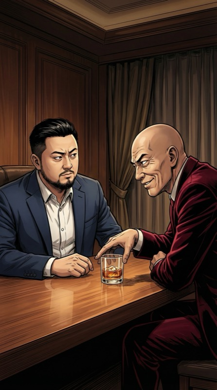
【私人会客室 · 中景/微仰 · 暖光】
他把一张黑色请帖推到我面前。烫金的字：天王局。
"收购你的那家公司，他们的专利授权文件在赌桌上。赢了，你拿走。输了——"
"输了怎样？"
"输了你就当又被裁了一次呗。"
这人说话的方式十年没变——把刀子裹在棉花糖里递给你。
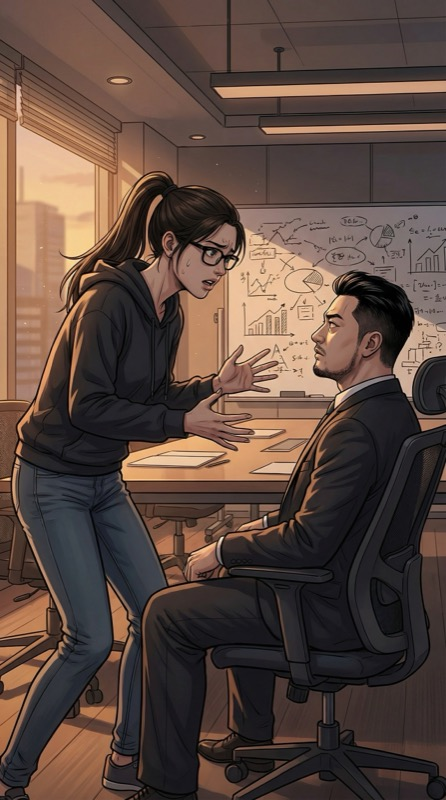
【会议室 · 中景 · 晚间】
"你疯了？！"苏晴把白板笔摔在桌上，"地下赌局？你是CEO不是赌徒！"
她指着白板上密密麻麻的技术架构图——那是我们做了两年的AI模型，我们的命根子。
"走法律程序，我们还有反收购的可能——"
"来不及了。72小时。"
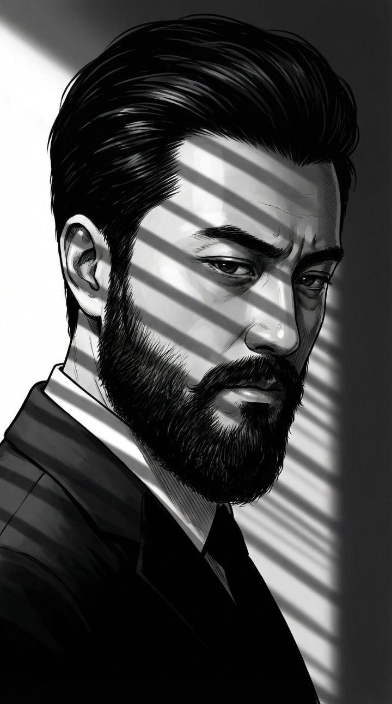
【会议室 · 特写 · 光影分割】
百叶窗把我的脸切成明暗两半。一半在说"这是圈套"，另一半在说"这是唯一的机会"。
我看着自己紧握的双手。这双手十年前能在三秒内破解一个数据库的密码。现在呢？
创业者的宿命——永远在赌。区别只是赌桌的大小。
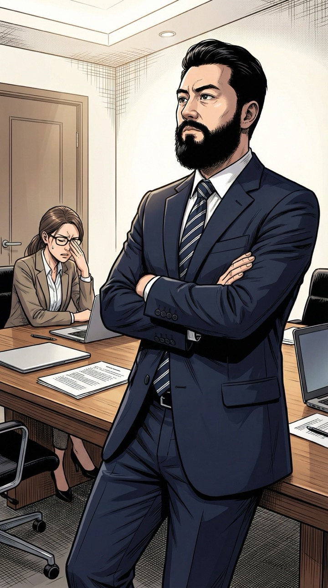
【会议室 · 中景/微仰】
"创业本来就是赌博。至少这次，赌桌上有椅子坐。"
苏晴看着我，那个表情我太熟悉了——"你又来了"。
"那我去准备后手。"她推了推眼镜，"万一你输了，我至少能把代码备份带走。"
这就是我最信任她的原因：她从不劝我回头，只帮我留退路。
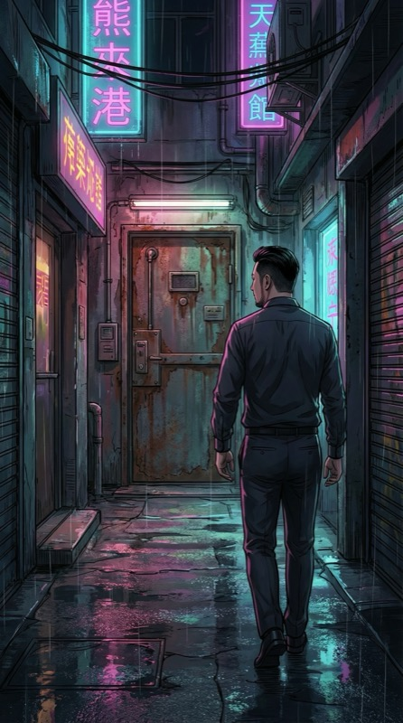
【城中暗巷 · 夜晚 · 远景/跟拍】
霓虹灯在湿漉漉的巷子里拖出变形的倒影。空气里有烟味、雨味，和一丝若有若无的铜臭。
巷子尽头那扇铁门看着其貌不扬，但门框上的划痕告诉我——这扇门每天至少被打开二百次。
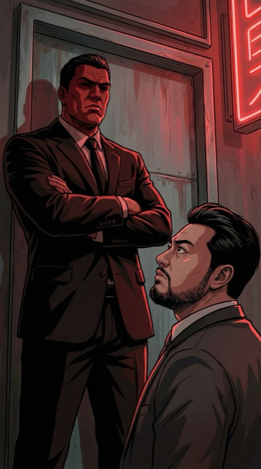
【铁门前 · 仰角/中景】
门口的保镖有一米九，脖子比我的大腿还粗。但我注意到他的右手食指在有节奏地敲着大腿。
一、二、三、四。一、二、三、四。在数数。这是缓解焦虑的下意识动作——他在紧张。
新来的。好。
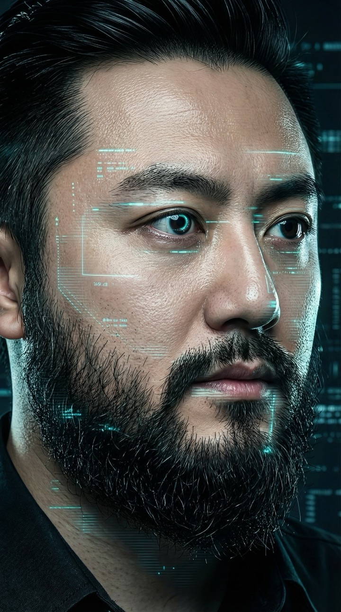
【入口 · 极致特写/瞳孔】
"全知视角"自动启动。这不是什么超能力，只是多年黑客训练出来的本能——观察、分析、建模。
别人看到的是一个赌场。我看到的是一个巨大的数据库，每个人都是一行代码，每个动作都是可以解析的信号。
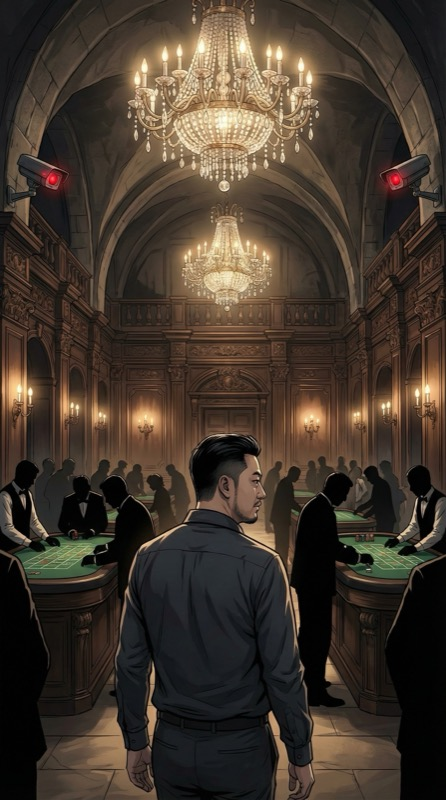
【地下赌场 · 全景/广角】
水晶吊灯。深色原木。绿色牌桌。空气中漂浮着雪茄烟雾和野心。
比我想象的要高级。也比我想象的要安静——真正的高手赌博时不需要喧哗。
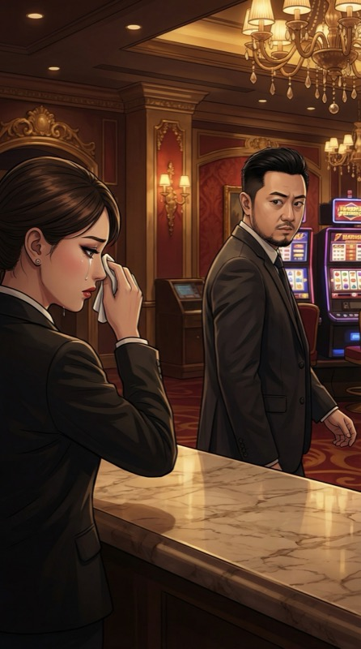
【赌场前厅 · 中景/侧面】
前台小姐姐笑容职业而完美。但我路过时注意到她左眼角有一小块没遮住的红——补过妆，而且补得很急。
刚哭过。在这种地方上班的人也会哭。好，记住了。
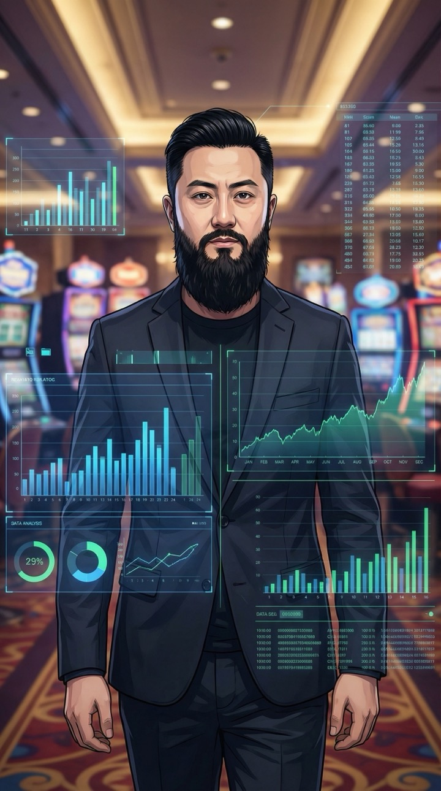
【走廊 · 中景/分屏特效】
我经过一个巡逻保安时，脑子里自动弹出分析面板——
呼吸频率：偏快。瞳孔：微散。右脚重心转移频率：1.2秒/次。结论：轻度焦虑，可能是新人轮值。威胁等级：低。
我不是在看人。我是在读代码。
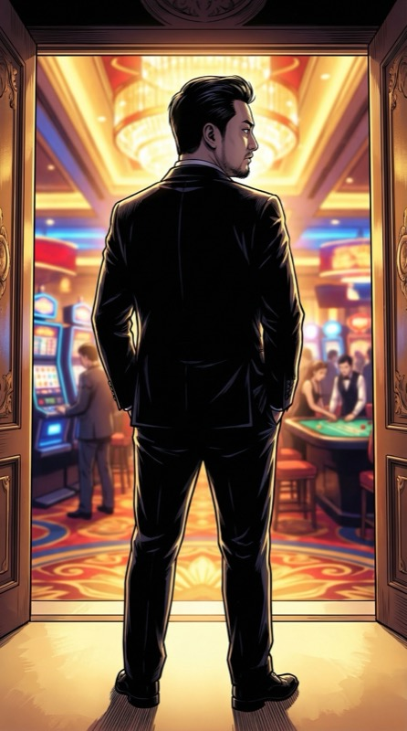
【主赌厅入口 · 背影/逆光剪影】
前方是灯火通明的主赌厅。身后是我熟悉的世界——写代码、做产品、融资、开会。
跨过这道门，就是另一个世界的规则。
我把袖口往上卷了卷。做黑客时的习惯——准备开工。
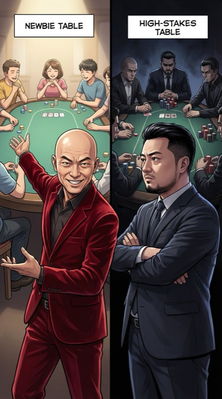
【主赌厅 · 中景/双人】
"左边，新人桌。安全，赌注小，慢慢来。"老K左手一指。
"右边，鲨鱼桌。你要的人在那儿。但上去了，就没有慢慢来的选项。"
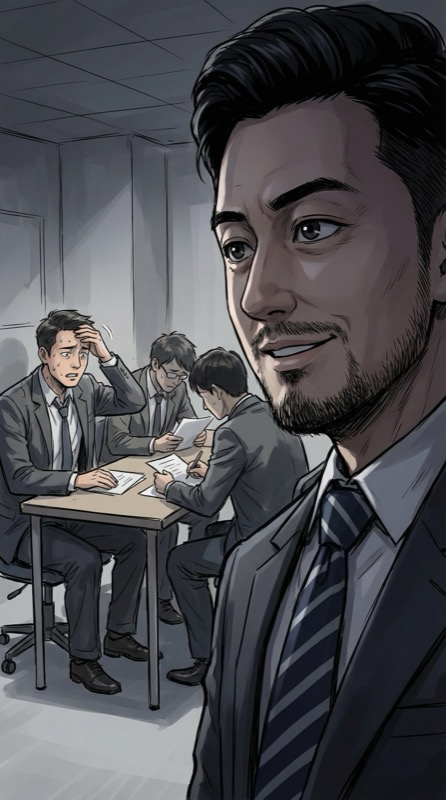
【新人桌 · 中景/朱江视角】
我看了眼新人桌——几个穿着起皱西装的中年男人，其中一个正用袖子擦额头的汗。
都是些输了会哭的CEO。我不忍心。
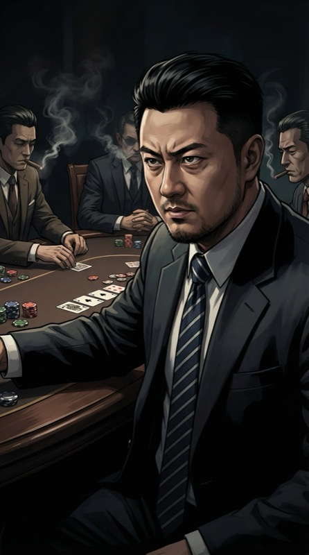
【鲨鱼桌 · 中景/朱江视角 · 暗调】
鲨鱼桌那边，烟雾缭绕中坐着几个面无表情的人。筹码堆得像小山。
那里有一个人，手里握着我公司的命。
好。直取要害。
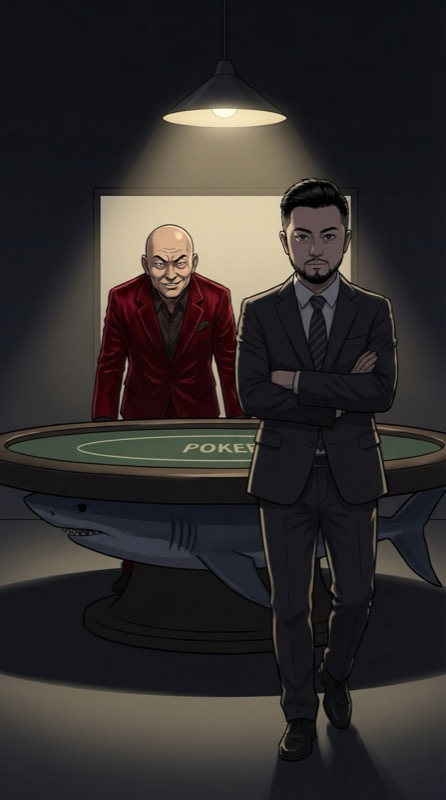
【主赌厅 · 中景/仰拍 · 背影】
我头也不回地走向鲨鱼桌。身后老K愣了一秒，然后笑了。
"有意思。"老K低声说。
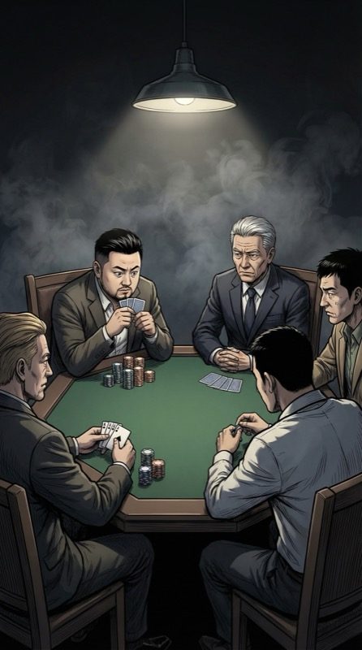
【鲨鱼桌 · 全景/俯拍】
八角牌桌。五个人。头顶一盏黄铜吊灯把我们笼在一个光圈里，四周全是黑暗。
对面坐着的就是刘总——收购方的代表。银灰色头发，深色定制西装，脸上的表情像是刻在石头上的。
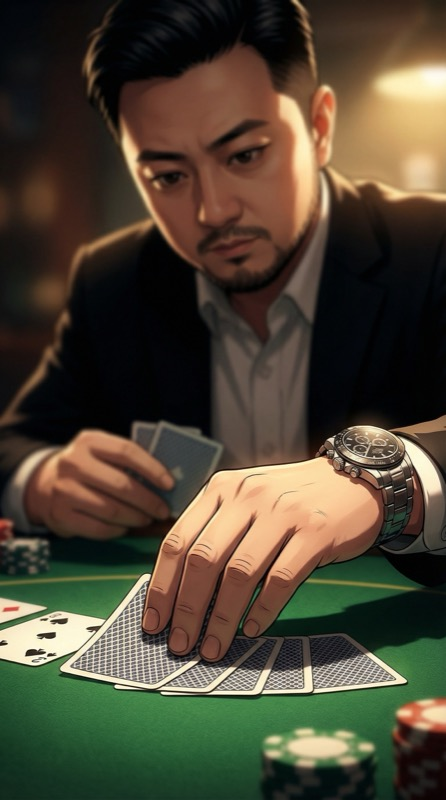
【牌桌 · 细节特写/浅景深】
牌发下来。我没急着看。先看人。
左手边的胖子看了牌后右眼跳了一下——好牌。对面刘总看了牌，面无表情——但他的呼吸节奏变了，从3秒一次变成2.5秒。
数据开始在我脑子里跑模型。
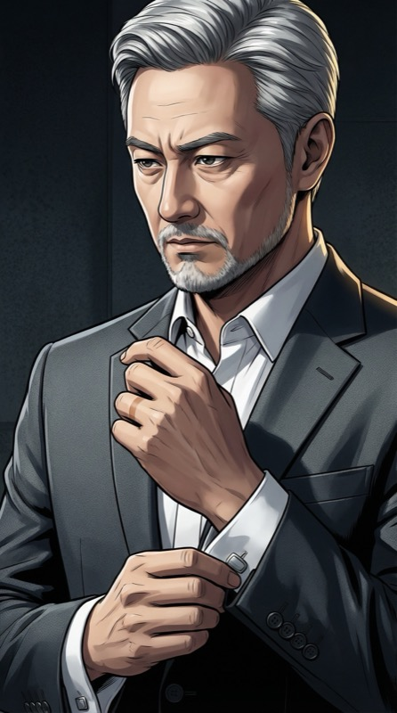
【牌桌对面 · 特写/侧光】
我仔细看了一眼刘总的左手。无名指上有一圈明显的晒痕——戒指印。最近才摘掉的。
离婚了。而且是最近。这种时候人的判断力会出现系统性偏差——要么过度保守，要么过度冒险。
他是哪一种？我需要一个测试。
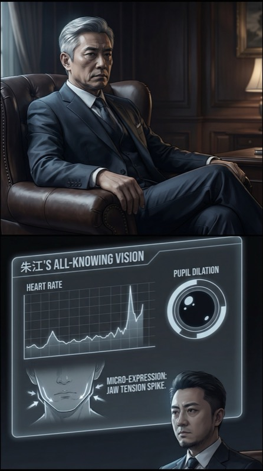
【牌桌 · 分屏/数据叠加特效】
全知视角全功率运转——
心率：偏高。瞳孔扩张：2.1mm，轻度兴奋。右手中指微动频率：0.8秒/次，在演镇定。下颌肌肉：紧绷。
综合判断：这人在虚张声势。手里的牌没他表现的那么好。
胜率计算：我赢的概率，80%。
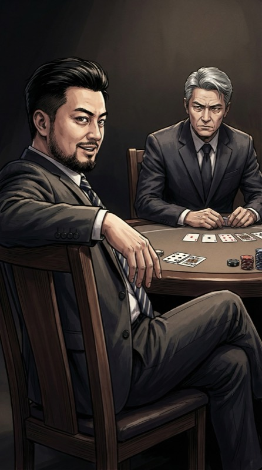
【牌桌 · 中景/朱江倚靠椅背】
"刘总，听说贵公司最近在做AI医疗？了不起啊，我们搞AI的都佩服。"
随口一句闲聊。但我在观察他的每一个微反应。
提到公司——嘴角微动，骄傲。提到AI——瞳孔没变化，不是他的领域。提到医疗——下意识摸了一下左手无名指。
确认：离婚和工作压力同时爆发。这人现在的心理状态，就像一个布满裂缝的大坝。
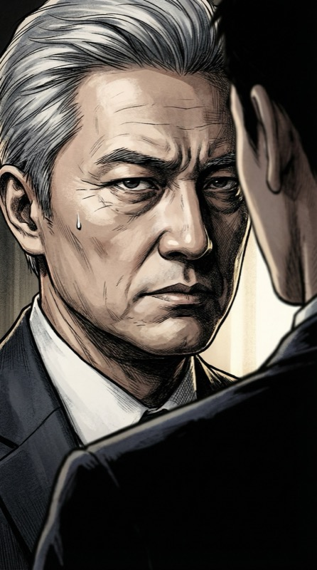
【刘总 · 特写/侧光】
刘总太阳穴上冒出了一颗极小的汗珠。他自己可能都没意识到。
但我看到了。在这张牌桌上，信息差就是一切。
现在问题来了——我有80%的胜率。第一局，要不要赢？
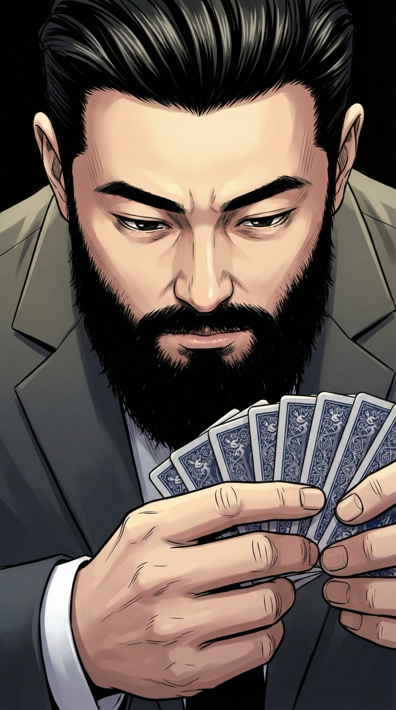
【牌桌 · 特写/俯角 · 手和牌】
我终于低头看了自己的牌。果然——好牌。
80%赢面。但我把手指放在筹码上，没有推出去。
黑客守则第一条：永远不要在第一次入侵时暴露全部能力。
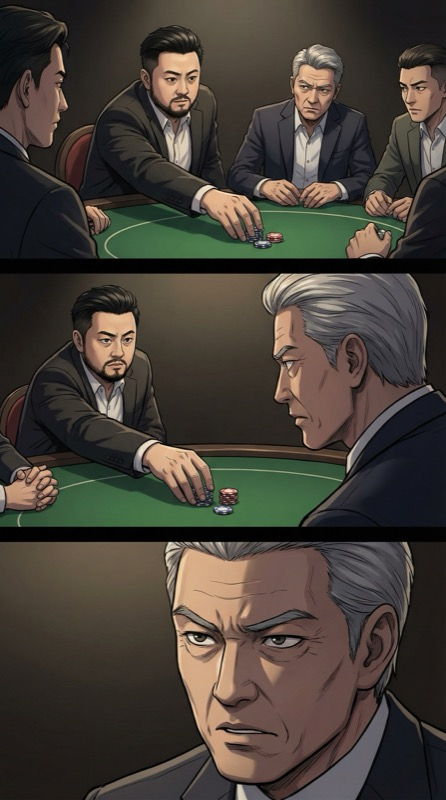
【牌桌 · 中景/戏剧化】
我推了一把小注。刻意露出几个"新手破绽"——摸了下鼻子，眼神飘了一下。
最终，刘总加注。我弃牌。
"运气不好。"我笑着摊手。
刘总眼里闪过一丝不易察觉的轻蔑。
很好。让他轻视我。下一局，他就不会提防了。
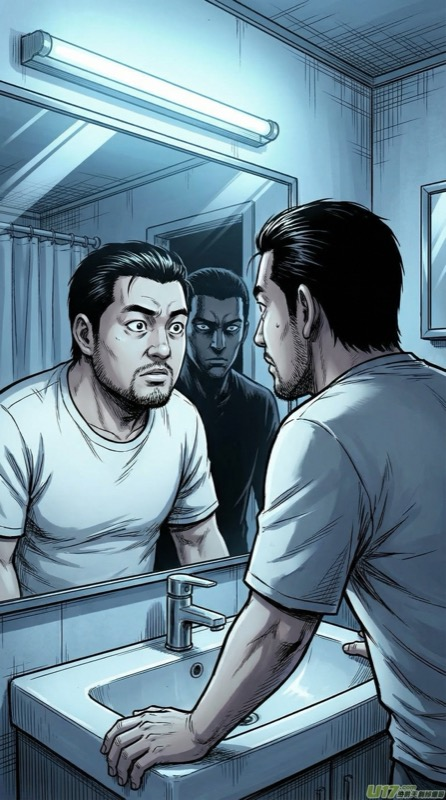
【洗手间 · 特写/镜面构图 · 冷白光】
我走进洗手间，拧开水龙头，双手撑着洗手台。
第一局完美。刘总已经被标记了——过度冒险型，心理防线有裂缝。三局之内可以攻破。
我抬头看向镜子，准备整理一下表情回去继续演戏。
然后我在镜子里看到了另一个人。
洗手间角落里，一个我没注意到的身影，正用一种我极其熟悉的目光看着我——
那是"全知视角"的目光。分析的、拆解的、建模的。
和我一模一样。
我的手指停在水龙头上。脊背发凉。